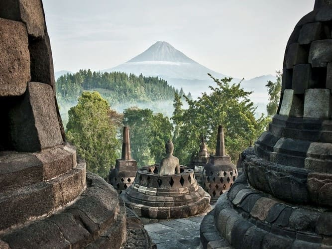

Cultural Heritages

Prambanan Temple
Prambanan Temple, a Hindu architectural marvel in Central Java, features towering spires and intricate relief panels depicting ancient Hindu epics, serving as a cultural icon and pilgrimage site.
Ombilin Mining Sawahlunto
A historic coal mining site in West Sumatra, Ombilin Mining Sawahlunto showcases remnants of 19th and 20th-century mining infrastructure, providing a glimpse into Indonesia's industrial past and technological progress.

Borobudur Temple
Borobudur Temple, one of the largest Buddhist monuments globally, showcases stunning architecture and thousands of Buddha statues, providing spiritual enlightenment and cultural immersion for visitors.